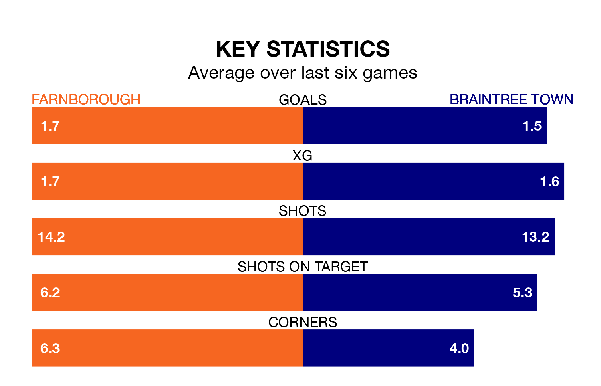

Farnborough host Braintree Town on Saturday at the Easy As HGV Stadium in National League North and South.
In their last league match, on December 16, Farnborough drew with Slough Town 2-2 away, with their goal scored by (two).
Braintree won, 1-0 at home against Aveley, with scoring their goals.
Farnborough are bottom of the table after 23 games, of which they have won seven and drawn nine, earning 30 points.
Braintree are 10 places ahead of Boro in 14th, with nine wins and seven draws putting them on 34 points.
With 39 goals in 23 games so far this season, the hosts are scoring more than average in the league with 1.7 goals per game. But they are conceding more than average too, letting in 40 goals at a rate of 1.7 per game.
Town are also above average scorers, with 1.6 goals per game, compared to a league average of 1.4. They have conceded 1.0 goal per game.
Farnborough are in disappointing form in National League North and South, with one win and two draws from their last six games.
With three wins and a draw over that period, the Iron's form is better – they have taken 10 points from 18, compared to Farnborough's five.
Over the last year, Farnborough and Braintree have played each other twice. Braintree won one of them and they drew the other.
Their last meeting was on September 9, when they played out a 1-1 draw.
Updated: 15:16, 21/12/23